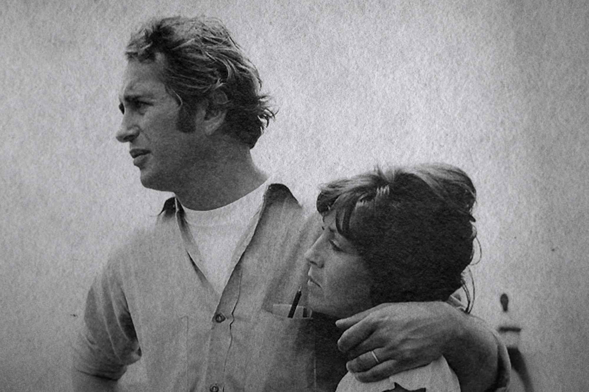
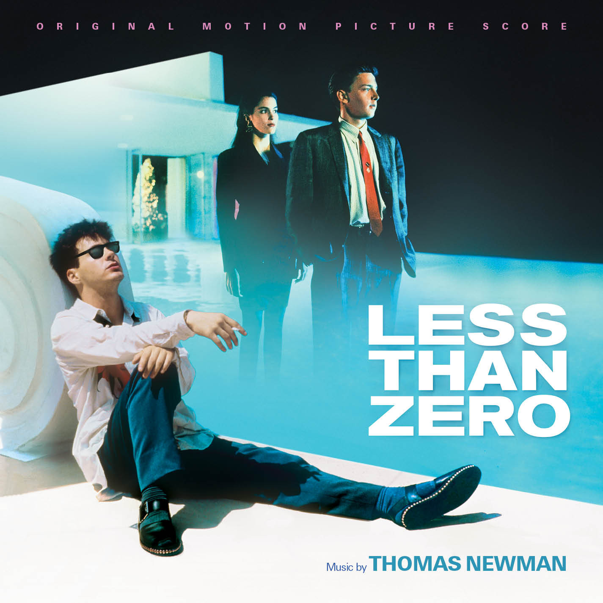
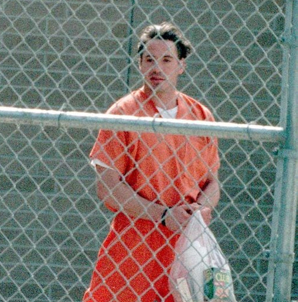
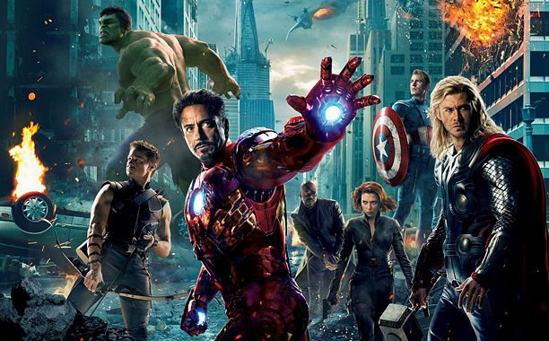

Robert Downey Jr. is born in New York City to filmmaker Robert Downey Sr. and actress Elsie Ford. He grows up surrounded by the film industry, which shapes his passion for acting.
Born into a Creative Family
1965

First Film Appearance
1970
At just 5 years old, he makes his acting debut in his father’s film Pound. This early exposure to the entertainment world sparks his interest in performing.
Breakthrough in Hollywood
1985

Joins Saturday Night Live and stars in Weird Science. His critically acclaimed role in Less Than Zero (1987) establishes him as a promising young actor.
Struggles with Addiction
1996-2001

Repeated arrests and substance abuse derail his career. He spends time in rehab and jail, causing him to lose major acting opportunities.
Career Comeback
1996-2001
Mel Gibson helps him land a role in The Singing Detective, marking the start of his redemption in Hollywood. His talent begins to shine again.
Becoming Iron Man
2008
Marvel Studios takes a risk by casting him as Tony Stark in Iron Man. The film’s success launches the Marvel Cinematic Universe and revitalizes his career.
The Avengers Era
2012

Plays Iron Man in The Avengers, which becomes a global sensation. His witty, charismatic portrayal makes him one of the most beloved superheroes.
Farewell to Tony Stark
2019
In Avengers: Endgame, he delivers an emotional farewell as Iron Man. His final scene, "I am Iron Man," becomes an iconic cinematic moment.
Life Beyond Marvel
2020-Present
Explores diverse roles in films like Dolittle while also producing projects. His legacy as one of Hollywood’s greatest actors continues to grow.